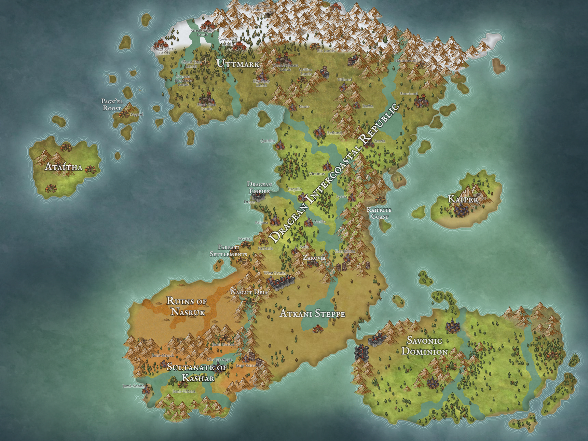
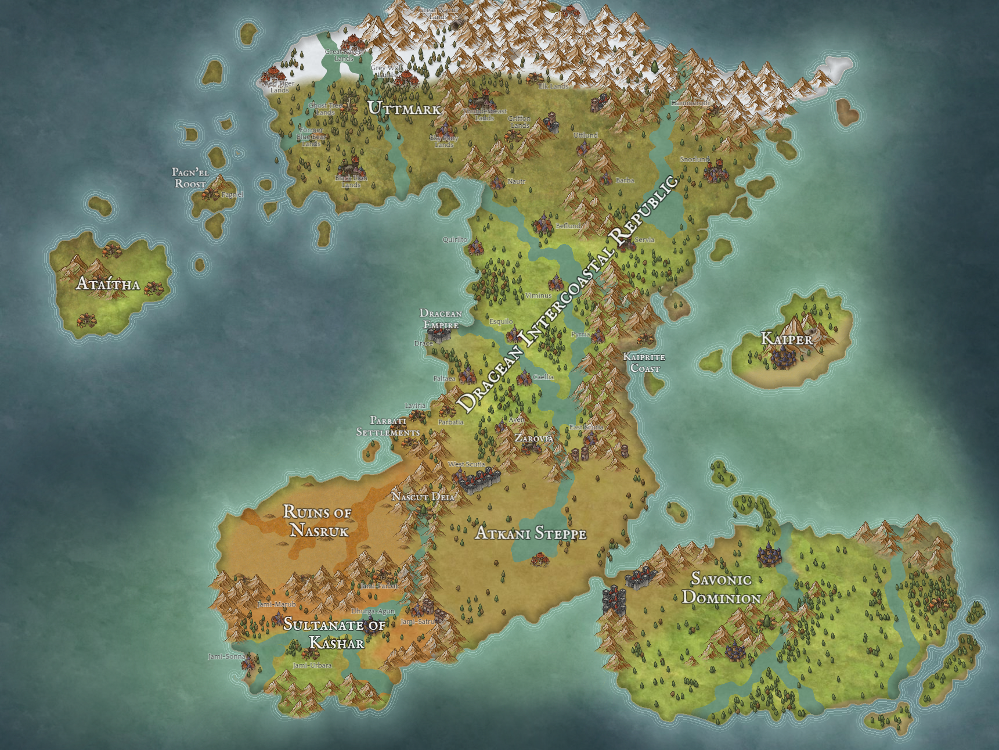

Places

Contents
ü°ê Home√Åtaitha Drace Dracean Intercoastal Republic (DIR) Kaiper Kashar Nascut Deia Ordo'Atkan T'Savo Uttmark Zarovia

ü°ê Home√Åtaitha Drace Dracean Intercoastal Republic (DIR) Kaiper Kashar Nascut Deia Ordo'Atkan T'Savo Uttmark Zarovia